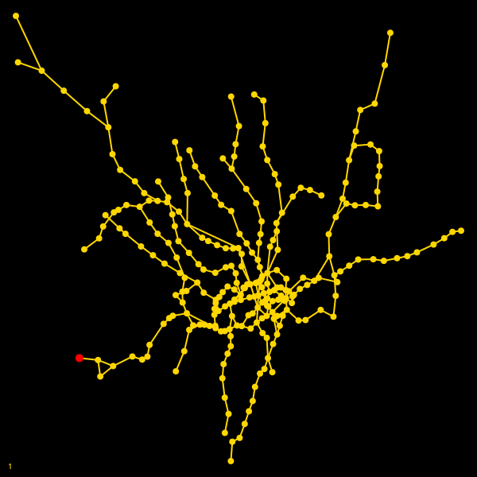
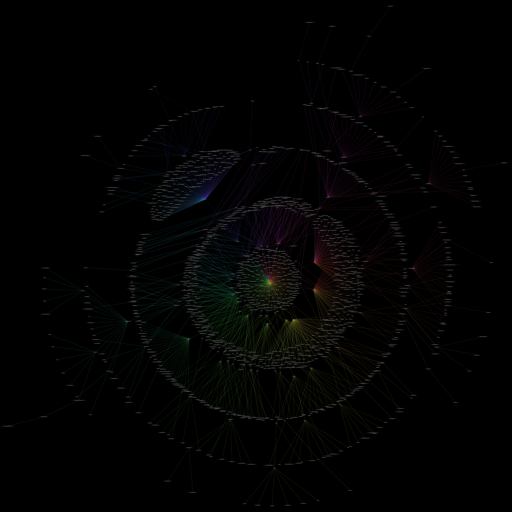
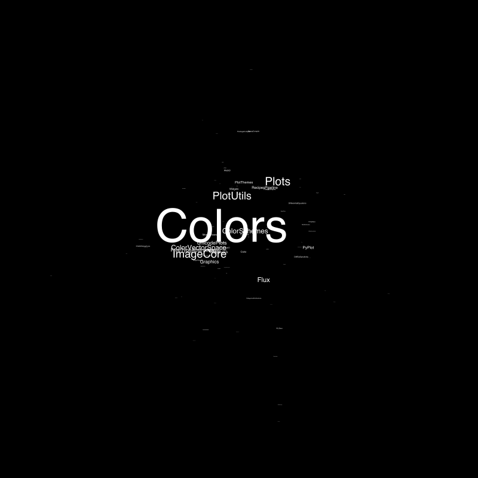

Examples
This chapter contains a few examples showing how to use drawgraph() to visualize a few graphs.
Julia type tree
This example tries to draw a type hierarchy diagram. The Buchheim layout algorithm can take a list of “vertex widths” that are normalized and then used to assign sufficient space for each label.
Code for this figure
This code generates the figure below:
using Karnak, Graphs, NetworkLayout, InteractiveUtils
add_numbered_vertex!(g) = add_vertex!(g)
function build_type_tree(g, T, level=0)
add_numbered_vertex!(g)
push!(labels, T)
for t in subtypes(T)
if occursin(".", string(t)) # only Base
continue
end
build_type_tree(g, t, level + 1)
add_edge!(g,
findfirst(isequal(T), labels),
findfirst(isequal(t), labels))
end
end
function manhattanline(pt1, pt2)
mp = midpoint(pt1, pt2)
poly([pt1,
Point(pt1.x, mp.y),
Point(pt1.x, mp.y),
Point(pt2.x, mp.y),
Point(pt2.x, mp.y),
Point(pt2.x, pt2.y),
pt2
], :stroke)
circle(pt2, 1, :fill)
end
g = DiGraph()
labels = []
build_type_tree(g, Number)
labels = map(string, labels)
dg = @drawsvg begin
background("grey20")
fontsize(15)
fontface("JuliaMono-Bold")
setline(1)
sethue("gold")
nodesizes = Float64[]
for l in eachindex(labels)
tx = textextents(string(labels[l]))
labelwidth = tx[3]
push!(nodesizes, labelwidth)
end
drawgraph(g, margin=50,
layout=Buchheim(nodesize=nodesizes),
vertexfunction=(v, c) -> begin
w = nodesizes[v]
bbox = BoundingBox(box(c[v], w/2, get_fontsize()))
# box
@layer begin
sethue("white")
box(bbox, 2, action=:fillpreserve)
sethue("gold")
strokepath()
end
#text
@layer begin
sethue("black")
textfit(labels[v], bbox)
end
end,
edgefunction=(n, s, d, f, t) -> manhattanline(f, t)
)
end 1000 550This graph could do with a bit more tweaking.
Julia source tree
This example takes a Julia expression and displays it as a tree.
using Karnak, Graphs, NetworkLayout, Colors
# shamelessly stolen from Professor David Sanders' Tree !
add_numbered_vertex!(g) = (add_vertex!(g); top = nv(g))
function walk_tree!(g, labels, ex, show_call = true)
top_vertex = add_numbered_vertex!(g)
where_start = 1 # which argument to start with
if !(show_call) && ex.head == :call
f = ex.args[1] # the function name
push!(labels, f)
where_start = 2 # drop "call" from tree
else
push!(labels, ex.head)
end
for i in where_start:length(ex.args)
if isa(ex.args[i], Expr)
child = walk_tree!(g, labels, ex.args[i], show_call)
add_edge!(g, top_vertex, child)
else
n = add_numbered_vertex!(g)
add_edge!(g, top_vertex, n)
push!(labels, ex.args[i])
end
end
return top_vertex
end
function walk_tree(ex::Expr, show_call = false)
g = DiGraph()
labels = Any[]
walk_tree!(g, labels, ex, show_call)
return (g, labels)
end
# build graph and labels
expression = :(2 + sin(30) * cos(15) / 2π - log(-1.02^exp(-1)))
g, labels = walk_tree(expression)
@drawsvg begin
background("grey10")
sethue("gold")
drawgraph(g,
margin=60,
layout = buchheim,
vertexlabels = labels,
vertexshapes = :circle,
vertexshapesizes = 20,
edgefunction = (n, s, d, f, t) -> begin
move(f)
line(t)
strokepath()
end,
vertexlabelfontsizes = 15,
vertexlabelfontfaces = "JuliaMono-Bold", # probably won't be available for docs
vertexlabeltextcolors = colorant"black")
fontface("JuliaMono-Bold")
fontsize(15)
text(string(expression), boxbottomcenter() + (0, -20), halign=:center)
end
LayeredLayouts.jl
LayeredLayouts is a package for working out how to layout graphs in a layered fashion: how to lay out directed acyclic graphs (DAGs), including trees, dependency graphs, and Sankey diagrams.
The package offers the Zarate algorithm (David Cheng Zarate). Positions are returned as x and y vectors, and should be converted to Points when passed to layout.
using Graphs
using LayeredLayouts
using Karnak
tree = SimpleDiGraph(Edge.(
[1 => 2, 2 => 3, 4 => 5, 4 => 6,
4 => 7, 4 => 8, 4 => 9, 4 => 10,
5 => 11, 5 => 12, 8 => 15, 8 => 16,
8 => 17, 8 => 18, 8 => 19, 9 => 20,
9 => 21, 10 => 22, 12 => 13, 13 => 14,
23 => 4, 23 => 24, 23 => 25, 23 => 26,
23 => 27, 23 => 28, 23 => 29, 23 => 30,
23 => 31, 28 => 32, 28 => 33, 29 => 35,
30 => 1, 30 => 38, 31 => 40, 33 => 34,
35 => 36, 35 => 37, 38 => 39, 40 => 41, 41 => 42]))
xs, ys, paths = solve_positions(Zarate(), tree)
@draw begin
background("black")
sethue("gold")
drawgraph(tree,
vertexlabels = 1:nv(tree),
edgestrokecolors = [Karnak.RGB(randomhue()...) for e in 1:ne(tree)],
layout= boxmiddleleft() .+
map(pt -> Point(90pt[1], 30pt[2]), zip(xs, ys))
)
end 600 500
Simple dependency graph
You can draw a visual interpretation of a Julia package's dependencies easily enough by going through the TOML files.
Code for this figure
This code generates the figure below:
using Karnak
using Graphs
using NetworkLayout
using InteractiveUtils
using Colors
using TOML
using Base: active_project
# mostly stolen from PkgGraph.jl by tfiers!
manifest(proj_path) = replace(proj_path, "Project.toml" => "Manifest.toml")
if VERSION ≥ v"1.7"
packages_in(manifest) = TOML.parsefile(manifest)["deps"]
else
packages_in(manifest) = TOML.parsefile(manifest)
end
packages_in_active_manifest() = packages_in(manifest(active_project()))
function depgraph(pkgname)
rootpkg = string(pkgname)
packages = packages_in_active_manifest()
if rootpkg ∉ keys(packages)
error("""
The given package ($pkgname) must be installed in the active project
(which is currently `$(active_project())`)""")
end
deps = Vector{Pair{String,String}}()
add_deps_of(name) = begin
pkg_info = only(packages[name])
direct_deps = get(pkg_info, "deps", [])
for dep in direct_deps
push!(deps, name => dep)
add_deps_of(dep)
end
end
add_deps_of(rootpkg)
return unique!(deps)
end
function build_depgraph(pkgname)
dgraphs = depgraph(pkgname)
pkglist = String[]
for (f, t) in dgraphs
if f ∉ pkglist
push!(pkglist, f)
end
if t ∉ pkglist
push!(pkglist, t)
end
end
g = DiGraph(length(pkglist))
for (f, t) in dgraphs
if f ∈ pkglist && t ∈ pkglist
add_edge!(g, findfirst(isequal(f), pkglist), findfirst(isequal(t), pkglist))
end
end
return g, pkglist
end
g, pkgnames = build_depgraph("DataFrames")
d = @drawsvg begin
background("grey5")
sethue("gold")
fontsize(10)
fontface("Avenir-Black")
drawgraph(
g,
margin=40,
layout = Stress(iterations = 100),
edgegaps = 13,
edgestrokeweights = 3,
edgecurvature = 4,
edgestrokecolors = [HSB(360rand(), 0.7, 0.8) for i in 1:ne(g)],
vertexlabels = (vtx) -> begin
string(pkgnames[vtx])
end,
vertexshapes = (v) -> begin
tx = textextents(pkgnames[v])
@layer begin
setopacity(0.8)
sethue("grey80")
box(O, 1.2tx[5], 1.5tx[4], 5, :fill)
end
end,
)
end 800 700There's an extended investigation of package dependencies later in this section.
The London Tube
One real-world example of a small network is the London Underground, known as “the Tube”. The 250 or so stations in the network can be modelled using a simple graph.
Setup
If you want to follow along, this is the setup required. The CSV file examples/tubedata-modified.csv contains the station names, latitude and longitudes, and connectivity details.
using Karnak, Luxor, Graphs, NetworkLayout, Colors
using DataFrames, CSV
# positions are in LatLong
tubedata = CSV.File("examples/tubedata-modified.csv") |> DataFrame
amatrix = Matrix(tubedata[:, 4:270])
extrema_lat = extrema(tubedata.Latitude)
extrema_long = extrema(tubedata.Longitude)
# scale LatLong and flip in y to fit into current Luxor drawing
positions = @. Point(
rescale(tubedata.Longitude, extrema_long..., -280, 280),
rescale(tubedata.Latitude, extrema_lat..., 280, -280))
stations = tubedata[!,:Station]
find(str) = findfirst(isequal(str), stations)
find(x::Int64) = stations[x]
g = Graph(amatrix)The tube “map” is stored in g, as a {267, 308} undirected simple Int64 graph.
The find() functions are just a quick way to convert between station names and ID numbers:
find("Waterloo")find(244)Not a map
Most London residents and visitors are used to seeing the famous Tube Map:

It’s a design classic, hand-drawn by Harry Beck in 1931, and updated regularly ever since. As an electrical engineer, Beck represented the sprawling London track network as a tidy circuit board. For Beck, the important thing about the map was to show the connections, rather than the accurate geography.
Our version looks very different, but it is at least geographically more accurate, because the latitude and longitude values of the stations are passed to layout.
@drawsvg begin
background("grey10")
sethue("grey50")
drawgraph(g,
layout = positions,
vertexshapes = :none,
vertexlabeltextcolors = colorant"white",
vertexlabels = find.(1:nv(g)),
vertexlabelfontsizes = 6)
endThe layout algorithms - layout = spring and layout = stress - do a reasonable job, but people like to see north at the top of maps, and south at the bottom, not mixed up in any direction, like these.
@drawsvg begin
background("grey20")
tiles = Tiler(800, 400, 1, 2)
sethue("white")
@layer begin
translate(first(tiles[1]))
drawgraph(g,
layout=spring,
boundingbox = BoundingBox(box(O, 400, 400)),
vertexshapes = :none,
vertexlabeltextcolors = colorant"white",
vertexlabels = find.(1:nv(g)),
vertexlabelfontsizes = 6
)
end
@layer begin
translate(first(tiles[2]))
drawgraph(g,
layout=stress,
boundingbox = BoundingBox(box(O, 400, 400)),
vertexshapes = :none,
vertexlabeltextcolors = colorant"white",
vertexlabels = find.(vertices(g)),
vertexlabelfontsizes = 6
)
end
end 800 400Train terminates here
Use the degree() function to show just the station names at the end of a line: a vertex with a degree of 1 is a terminus:
@drawsvg begin
background("grey90")
sethue("black")
drawgraph(g, layout=positions,
vertexshapesizes = 2,
vertexlabels = [(degree(g, n) == 1) ? find(n) : ""
for n in vertices(g)],
vertexlabeltextcolors = colorant"blue"
)
endThese labels show names familiar to all Tube-riders - the ones shown on the front of trains and on platform indicators. (It's unusual to visit them all, unless you're like Geoff Marshall, who holds the world record for the fastest time visiting every Tube station.)
Neighbors
The best connected station is also one of the oldest, dating back to 1863:
find(argmax(degree(g, 1:nv(g))))Its neighbors are:
find.(neighbors(g, find("Baker Street")))Centrality
Using Graphs.jl's tools for measuring centrality, Baker Street is again at the top of the list, but Green Park (the Queen's nearest tube station), scores highly, despite not being in the top 20 busiest stations.
@drawsvg begin
background("grey10")
translate(0, -200)
scale(3)
bc = betweenness_centrality(g)
sethue("gold")
_, maxbc = extrema(bc)
drawgraph(g, layout = positions,
vertexlabels = (vtx) -> bc[vtx] > maxbc * 0.6 && string(find(vtx)),
vertexlabeltextcolors = colorant"cyan",
vertexlabelfontsizes = 6,
vertexshapesizes = 1 .+ 10bc,
vertexfillcolors = HSB.(rescale.(bc, 0, maximum(bc), 0, 300), 0.7, 0.8),
)
end 800 600Mornington Crescent
A route from Heathrow Terminal 5 to Mornington Crescent can be found using a_star().
heathrow_to_morningtoncrescent = a_star(g,
find("Heathrow Terminal 5"),
find("Mornington Crescent"))
@drawsvg begin
background("grey70")
translate(0, -100)
scale(3)
sethue("grey50")
drawgraph(g,
layout = positions,
vertexshapesizes = 1)
sethue("black")
fontsize(4)
drawgraph(g,
layout = positions,
vertexshapes = :none,
edgelist = heathrow_to_morningtoncrescent,
edgestrokeweights = 3,
vertexlabels = (vtx) -> begin
if vtx ∈ src.(heathrow_to_morningtoncrescent) ||
vtx ∈ dst.(heathrow_to_morningtoncrescent)
circle(positions[vtx], 2, :fill)
label(find(vtx), :e, positions[vtx])
end
end)
endThe route found by a_star is:
[find(dst(e)) for e in heathrow_to_morningtoncrescent]Information about the required changes - at Victoria from the Piccadilly line to the Victoria Line, and at Warren Street from the Victoria Line to the Northern Line - is not part of the graph. Routes across the Tube network, like the trains, follow the tracks (edges). The concept of “lines” (Victoria, Circle, etc) isn’t part of the graph structure, but a colorful layer imposed on top of the track network.
Pandemic
Graphs.jl provides many functions for analysing graph networks. The diffusion() function appears to simulate the diffusion of an infection from some starting vertices and the probability of spreading.
The function returns an array of arrays, where each one contains the vertex numbers of newly "infected" vertices. For example, in this result:
[[1], Int64[], [22, 15, 25], ...]the first stage showed vertex 1 "infected"; stage two was free of incident; but on stage 3 vertices 22, 15, and 25 have become "infected".
So here, apparently, is a simulation of what might happen when an infection arrives at Heathrow Airport's Terminal 5 tube station, and starts spreading through the tube network.
function frame(scene, framenumber, diffresult)
background("black")
sethue("gold")
text(string(framenumber), boxbottomleft() + (10, -10))
drawgraph(g, layout = positions, vertexshapesizes = 3)
for k in 1:framenumber
i = diffresult[k]
drawgraph(
g,
layout = positions,
edgelines = 0,
vertexfunction = (v, c) -> begin
if !isempty(i)
if v ∈ i
sethue("red")
circle(positions[v], 5, :fill)
end
end
end,
)
end
end
function main()
amovie = Movie(600, 600, "diff")
diffresult = diffusion(g, 0.2, 200, initial_infections=[find("Heathrow Terminal 5")])
animate(amovie,
Scene(amovie, (s, f) -> frame(s, f, diffresult), 1:length(diffresult)),
framerate=10,
creategif=true,
pathname="/tmp/diff.gif")
end
main()
The JuliaGraphs logo
The current logo for the Graphs.jl package was easily drawn using Karnak.
I wanted to use the graph coloring feature (greedy_color()), but unfortunately it was too clever, managing to color the graph using only two colors instead of the four I was hoping to use.
using Graphs
using Karnak
using Colors
function lighten(col::Colorant, f)
c = convert(RGB, col)
return RGB(f * c.r, f * c.g, f * c.b)
end
function julia_sphere(pt::Point, w, col::Colorant;
action = :none)
setmesh(mesh(
makebezierpath(box(pt, w * 1.5, w * 1.5)),
[lighten(col, .5),
lighten(col, 1.75),
lighten(col, 1.25),
lighten(col, .6)]))
circle(pt, w, action)
end
function draw_edge(pt1, pt2)
for k in 0:0.1:1
setline(rescale(k, 0, 1, 25, 1))
sethue(lighten(colorant"grey50", rescale(k, 0, 1, 0.5, 1.5)))
setopacity(rescale(k, 0, 1, 0.5, 0.75))
line(pt1, pt2, :stroke)
end
end
# positions for vertices
outerpts = ngonside(O, 450, 4, π/4, vertices=true)
innerpts = ngonside(O, 150, 4, π/2, vertices=true)
pts = vcat(outerpts, innerpts)
colors = map(c -> RGB(c...),
[Luxor.julia_blue, Luxor.julia_red, Luxor.julia_green, Luxor.julia_purple])
@drawsvg begin
squircle(O, 294, 294, :clip, rt=0.2)
sethue("black")
paint()
g = SimpleGraph([
Edge(1,2), Edge(2,3), Edge(3,4), Edge(1,4),
Edge(5,6), Edge(6,7), Edge(7,8), Edge(5,8),
Edge(1,5), Edge(2,6), Edge(3,7), Edge(4,8),
])
drawgraph(Graph(g),
layout=pts,
vertexfunction = (v, c) -> begin
d = distance(O, c[v])
d > 200 ? k = 0 : k = 1
julia_sphere(c[v],
rescale(d, 0, 200, 52, 50), colors[mod1(v + k, 4)],
action=:fill)
end,
edgefunction = (k, s, d, f, t) -> draw_edge(f, t)
)
endJulia Package Dependencies
This example was originally developed by Mathieu Besançon and presented as part of the workshop: Analyzing Graphs at Scale, at JuliaCon 2020. You can watch the video on YouTube.
The most important changes since the video was made are:
the renaming of LightGraphs.jl to Graphs.jl
the way to access the list of packages has changed
The code builds a dependency graph of the connections (ie which package depends on which package) for Julia packages in the General registry.
Then it's possible draw some pictures, such as this chonky SVG file showing the dependencies for the Colors.jl package:

Or this one, which attempts to highlight just the more connected packages in the Colors.jl dependency graph:

Setup:
using Graphs
using MetaGraphs
using TOML
using Karnak
using ColorsFinding the general registry
On my computer, the registry is in its default location. You might need to modify these lines if yours is is another location:
path_to_general = expanduser("~/.julia/registries/General")
registry_file = Pkg.TOML.parsefile(joinpath(path_to_general, "Registry.toml"))
packages_info = registry_file["packages"];First we need the name and location of every package:
# Julia <= v1.6
pkg_paths = map(values(packages_info)) do d
(name = d["name"], path = d["path"])
end# Julia >= v1.7
pkg_paths = map(values(Pkg.Registry.reachable_registries()[1].pkgs)) do d
(name = d.name, path = d.path)
endThe result in pkg_paths is a vector of tuples, containing the name and location of every package:
7495-element Vector{NamedTuple{(:name, :path), Tuple{String, String}}}:
(name = "COSMA_jll", path = "C/COSMA_jll")
(name = "CitableImage", path = "C/CitableImage")
(name = "Trixi2Img", path = "T/Trixi2Img")
(name = "ImPlot", path = "I/ImPlot")Find packages that depend on a specific package
The function find_direct_deps() finds all the packages (names and locations) that directly depend on a specific named package.
function find_direct_deps(registry_path, pkg_paths, source)
filter(pkg_paths) do pkg_path
deps_file = joinpath(registry_path, pkg_path.path, "Deps.toml")
# some packages don't have Deps.toml file
isfile(deps_file) && begin
deps_struct = Pkg.TOML.parsefile(deps_file)
any(values(deps_struct)) do d
source in keys(d)
end
end
end
endWe can now find out how many packages depend on a particular package. For example, how many packages depend on Colors.jl (my favourite)?
find_direct_deps(path_to_general, pkg_paths, "Colors")giving this result:
227-element Vector{NamedTuple{(:name, :path), Tuple{String, String}}}:
(name = "TopologyPreprocessing", path = "T/TopologyPreprocessing")
(name = "DynamicGrids", path = "D/DynamicGrids")
(name = "SimpleSDMLayers", path = "S/SimpleSDMLayers")
(name = "UnderwaterAcoustics", path = "U/UnderwaterAcoustics")
(name = "ColorSchemeTools", path = "C/ColorSchemeTools")
(name = "PrincipalMomentAnalysisApp", path = "P/PrincipalMomentAnalysisApp")
⋮
(name = "SoilWater_ToolBox", path = "S/SoilWater_ToolBox")
(name = "Starlight", path = "S/Starlight")
(name = "Dojo", path = "D/Dojo")
(name = "OpticSim", path = "O/OpticSim")
(name = "LVServer", path = "L/LVServer")Colors.jl has 227 packages that depend on it. When Mathieu ran this code in 2020 on "LightGraphs", the vector had 92 elements. Today, in 2022, for "Graphs", the vector has 115 elements.
Build a directed tree
The next function, build_tree(), will build a directed graph of the dependencies on Colors.jl. Starting at the root package (Colors) the loop finds all its dependencies, then finds the dependencies of all of those dependent packages, and continues doing this until it reaches packages that have no dependencies. These are the "leaves" at the tip of the tree's branches.
function build_tree(registry_path, pkg_paths, root)
g = MetaDiGraph()
add_vertex!(g)
set_prop!(g, 1, :name, root)
i = 1
explored_nodes = Set{String}((root,))
while true
i % 50 == 0 && print(i, " ")
current_node = get_prop(g, i, :name)
direct_deps = find_direct_deps(registry_path, pkg_paths, current_node)
filter!(d -> d.name ∉ explored_nodes, direct_deps)
if isempty(direct_deps) && i >= nv(g)
break
end
for ddep in direct_deps
push!(explored_nodes, ddep.name)
add_vertex!(g)
set_prop!(g, nv(g), :name, ddep.name)
add_edge!(g, i, nv(g))
end
i += 1
end
return g
endThis function takes some time to run - about 8 minutes for about 1400 iterations on my computer.
g = build_tree(path_to_general, pkg_paths, "Colors")
{1375, 1374} directed Int64 metagraph with Float64 weights defined by :weight (default weight 1.0)Notice that there are 1375 nodes, but one less edge. The Colors.jl package is the root of the tree, and doesn't connect to anything else, in this analysis.) Of course, it depends on quite a few, but that's another graph story.)
The result is a directed metagraph. In a metagraph, as implemented by MetaGraphs.jl, it's possible to add information to vertices using set_prop() and get_prop().
To find all the package names in the graph that are directly connected to Colors.jl, we can broadcast get_prop() like this:
get_prop.(Ref(g), outneighbors(g, 1), :name)
227-element Vector{String}:
"SqState"
"InteractBase"
"ImageMetadata"
"PlantGeom"
"MicrobiomePlots"
"MeshViz"
"SGtSNEpi"
"ColorSchemes"
"CairoMakie"
⋮
"GenomicMaps"
"ModiaPlot"
"Thebes"
"ConstrainedDynamics"
"AutomotiveVisualization"
"Flux"outneighbors returns a list of all neighbors connected to vertex v by an outgoing edge.
Shortest paths and lengths of branches
The dijkstra_shortest_paths() function finds the paths between the designated package and all its dependencies.
The returned value is a DijkstraState object, with fields parents, dists, predecessors, pathcounts, and closest_vertices.
Looking at the dists (distances), we see that one package is very close indeed at 0.0 - that's Colors.jl itself.
spath_result = dijkstra_shortest_paths(g, 1)
spath_result.dists
1375-element Vector{Float64}:
0.0
1.0
1.0
1.0
1.0
1.0
1.0
⋮
5.0
5.0
5.0
6.0
6.0
6.0
6.0
6.0
6.0
7.0
7.0Or in a barchart:
scores = [count(==(i), spath_result.dists) for i in unique(spath_result.dists)]The "furthest" packages from Colors.jl - the two seven steps away - are:
for idx in eachindex(spath_result.dists)
if spath_result.dists[idx] == 7
println(get_prop(g, idx, :name))
end
end
QuantumESPRESSOExpress
RecommendersComputing a full subgraph
All the package names are obtained with:
all_packages = get_prop.(Ref(g), vertices(g), :name)
Vector{String}:
"Colors"
"TopologyPreprocessing"
"DynamicGrids"
"SimpleSDMLayers"
"UnderwaterAcoustics"
"ColorSchemeTools"
⋮
"ReservoirComputing"
"TreeParzen"
"GeoStatsImages"
"StoppingInterface"
"QuantumESPRESSO"
"Recommenders"
"QuantumESPRESSOExpress"These next commands build a metagraph, using the package names:
full_graph = MetaDiGraph(length(all_packages))
{1375, 0} directed Int64 metagraph with Float64 weights defined by :weight (default weight 1.0)Assigning names to the vertices:
for v in vertices(full_graph)
set_prop!(full_graph, v, :name, all_packages[v])
endBuild the full graph:
for v in vertices(full_graph)
pkg_name = get_prop(full_graph, v, :name)
dependent_packages = find_direct_deps(path_to_general, pkg_paths, pkg_name)
for dep_pkg in dependent_packages
pkg_idx = findfirst(==(dep_pkg.name), all_packages)
# only packages in graph
if pkg_idx !== nothing
add_edge!(full_graph, pkg_idx, v)
end
end
endIt's useful to be able to save and load this graph:
# using Graphs, MetaGraphs
# save:
savegraph("examples/full_graph.lg", full_graph))
# load:
full_graph = loadgraph("examples/full_graph.lg", MGFormat())All roads lead to home
The code in this next example draws the vertices as an impressionistic point cloud, and uses the a_star() function to find a path from some random package back to Colors.jl.
@drawsvg begin
background("black")
sethue("white")
fontface("BarlowCondensed-Bold")
random_package = rand(1:nv(full_graph))
astar = a_star(full_graph, random_package, 1)
astar_vertices = sort(unique(vcat([src(e) for e in astar], [dst(e) for e in astar])), rev=true)
drawgraph(g,
edgelist=astar,
layout=spring,
vertexlabels = (v) -> v ∈ astar_vertices[[begin, end]] && get_prop(full_graph, v, :name),
vertexlabeltextcolors = colorant"white",
vertexlabelfontsizes = 20,
vertexlabelfontfaces = "BarlowCondensed-Bold",
vertexshapesizes = .5,
vertexstrokecolors = :none)
textfit(string(join(get_prop.(Ref(full_graph), astar_vertices, :name), " > ")),
BoundingBox(box(boxbottomcenter() + (0, -30), 600, 50)))
end 800 800
Pagerank
This code computes the pagerank of the graph. It returns a long list of numbers, the centrality score for each vertex.
ranks = pagerank(full_graph)
1375-element Vector{Float64}:
0.15339826572024867
0.00020384989099126913
0.00043081071431843264
0.0002471787754446367
0.0005504809666182096
0.00020384989099126913
0.00020384989099126913
0.00034105802509359976
0.0012284800170342895
⋮
0.00020384989099126913
0.00020384989099126913
0.00042629607921470863
0.00020384989099126913
0.0002616217369290926@drawsvg begin
background("black")
sethue("white")
fontface("BarlowCondensed-Bold")
ranks = pagerank(full_graph)
drawgraph(g,
edgelist = [],
layout=spring,
vertexshapes = :none,
vertexlabels = (v) -> ranks[v] > 0.001 && get_prop(full_graph, v, :name),
vertexlabelfontsizes = 500ranks,
vertexlabeltextcolors = colorant"white")
end 800 800
The problem with this representation is one of overlapping labels. This isn't an issue we can fix easily in Karnak.
Highly ranked
With some sorting, we can find the highest ranked packages in this part of the ecosystem.
sorted_indices = sort(eachindex(ranks), by=i->ranks[i], rev=true)
1375-element Vector{Int64}:
1
543
137
112
144
164
⋮
259
258
729
730
688get_prop.(Ref(full_graph), sorted_indices, :name)
1375-element Vector{String}:
"Colors"
"Plots"
"ImageCore"
"PlotUtils"
"ColorSchemes"
"ColorVectorSpace"
⋮
"TopOptMakie"
"VTKDataIO"
"EFTfitter"
"SpmGrids"
"ElectronTests"Most dependencies, most depended on
indegree() returns the number of edges which end at a vertex. For a package, this is another way of seeing how many other packages depend on it.
in_sorted_indices = sort(vertices(full_graph),
by = i -> indegree(full_graph, i), rev = true)
1375-element Vector{Int64}:
543
1
65
98
133
137
⋮
287
743
744
285
688get_prop.(Ref(full_graph), in_sorted_indices, :name)
1375-element Vector{String}:
"Plots"
"Colors"
"Flux"
"Images"
"PyPlot"
"ImageCore"
⋮
"PolaronMobility"
"CineFiles"
"MadNLPGraph"
"MicroscopyLabels"
"ElectronTests"outdegree() finds the number of edges which start at a vertex.
out_sorted_indices = sort(vertices(full_graph),
by = i -> outdegree(full_graph, i), rev=true)
1375-element Vector{Int64}:
372
98
35
24
300
153
⋮
776
777
778
779
1get_prop.(Ref(full_graph), out_sorted_indices, :name)
1375-element Vector{String}:
"StatisticalRethinking"
"Images"
"Makie"
"MakieGallery"
"PredictMDExtra"
"GLMakie"
⋮
"MimiPAGE2020"
"MimiSNEASY"
"OptiMimi"
"SyntheticNetworks"
"Colors"ranks_betweenness = betweenness_centrality(full_graph)
1375-element Vector{Float64}:
0.0
0.0
3.1186467511475384e-5
5.300816007616213e-7
5.830897608377834e-5
0.0
⋮
0.0
0.0
4.24065280609297e-6
0.0
1.0601632015232426e-6sorted_indices_betweenness = sort(vertices(full_graph),
by = i -> ranks_betweenness[i], rev=true)
1375-element Vector{Int64}:
144
98
112
543
461
35
⋮
562
563
564
565
1get_prop.(Ref(full_graph), sorted_indices_betweenness, :name)
1375-element Vector{String}:
"ColorSchemes"
"Images"
"PlotUtils"
"Plots"
"ImageIO"
"Makie"
⋮
"BridgeDiffEq"
"BridgeLandmarks"
"FCA"
"BEASTDataPrep"
"Colors"Is_cyclic
is_cyclic() returns true if the graph contains a cycle.
is_cyclic(full_graph)
true
for cycle in simplecycles(full_graph)
names = get_prop.(Ref(full_graph), cycle, :name)
@info names
end
["ImageCore", "MosaicViews"]
["Images", "ImageSegmentation"]
["Makie", "GLMakie"]
["POMDPPolicies", "BeliefUpdaters", "POMDPModels", "POMDPSimulators"]
["BeliefUpdaters", "POMDPModels"]
["BeliefUpdaters", "POMDPModels", "POMDPSimulators"]
["ReinforcementLearning", "ReinforcementLearningEnvironmentDiscrete"]
["Modia3D", "Modia"]
["RasterDataSources", "GeoData"]
["DSGE", "StateSpaceRoutines"]For that first cycle: ImageCore.jl's Project.toml file has MosaicViews.jl in its [deps] section, and MosaicViews.jl has ImageCore.jl in the [extras] section of its Project.toml file.
Draw some graphs
Visualizations of graphs are sometimes (often?) better at communicating vague ideas such as complexity and shape. But it's quite difficult to render graphs as rich as these to show the connections clearly while also showing all the labels such that they're easy to read.
The solution may be to print out these graph representations and stick them on a nearby wall, although, with Julia's General Registry changing every day, it would be out of date before the glue dries.

The images above were made with the following code.
@pdf begin
background("black")
sethue("gold")
setline(0.3)
drawgraph(g,
layout = stress,
edgefunction = (k, s, d, f, t) -> begin
@layer begin
sl = slope(O, t)
sethue(HSVA(rescale(sl, 0, 2π, 0, 360), 0.7, 0.7, .9))
line(f, t, :stroke)
end
end,
vertexfunction = (v, c) -> begin
@layer begin
t = get_prop(g, v, :name)
te = textextents(t)
setopacity(0.7)
sethue("grey10")
fontsize(3)
box(c[v], te[3]/2, te[4]/2, :fill)
setopacity(1)
sethue("white")
text(t, c[v], halign=:center, valign=:middle)
end
end)
@info " finish drawing"
end 2500 2500 "/tmp/graph-dependencies-colors.pdf"using ColorSchemes
@svg begin
background("black")
maxdeg = maximum(degree(full_graph))
drawgraph(full_graph,
layout = spring,
edgelines = 0,
vertexfunction = (v, c) -> begin
d = degree(full_graph, v)
@layer begin
sethue(get(ColorSchemes.darkrainbow, rescale(d, 1, maxdeg)))
circle(c[v], rescale(d, 1, 270, 2, 20), :fill)
end
if d > 20
fontsize(rescale(d, 1, maxdeg, 5, 20))
setcolor("white")
textoutlines(all_packages[v], c[v], halign=:center, valign=:bottom, :fill)
setline(rescale(d, 1, maxdeg, 0.25, 1))
sethue("black")
textoutlines(all_packages[v], c[v], halign=:center, valign=:bottom, :stroke)
end
end)
end 1200 1200 "/tmp/graph-dependencies-2.svg"